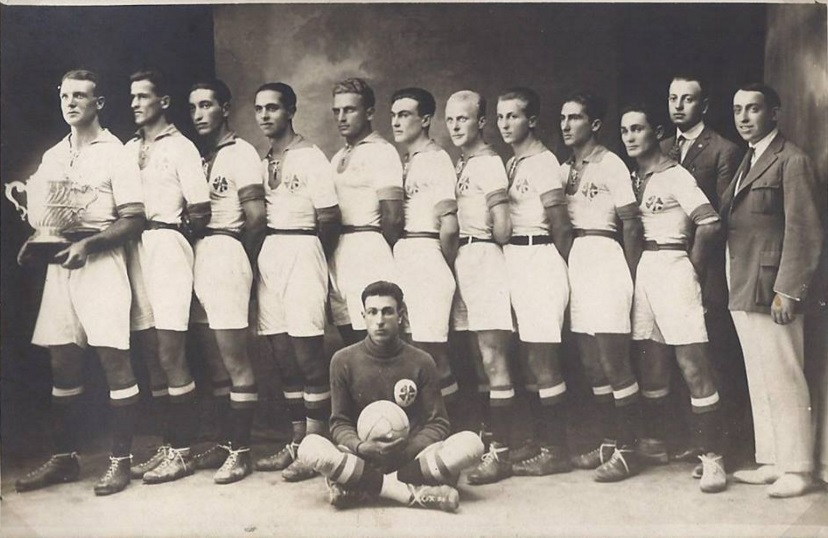

Професионален футболен клуб
Ботев Пловдив
- Основан - 12 март 1912 г. (на 104 г.)
- Стадион - „Христо Ботев“
- Клубни успехи:
- А група:
- Шампион: (2): 1929, 1967
- Второ място (2): 1963, 1986
- Трето място (13): 1930,1937,1943,1957,1961,1981,1983,1985,1987,1988,1993,1994,1995
- Купа на България:
- Шампион (2): 1962, 1981
- Подгласник (9): 1947, 1956, 1963, 1964, 1984, 1991, 1993, 1995, 2014
- Купа на носителите на купи(КНК):
